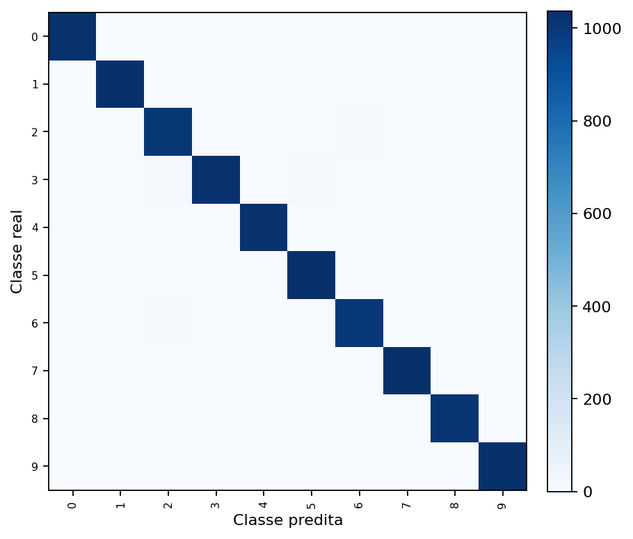
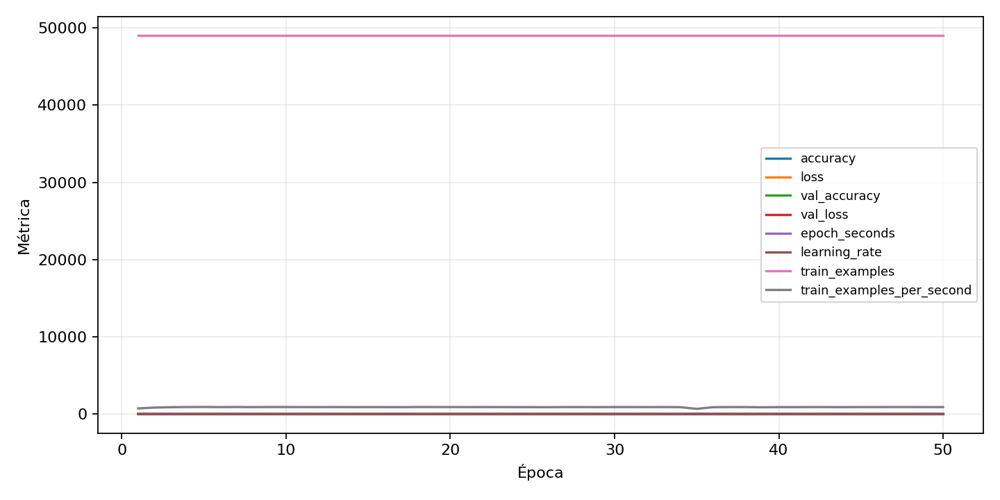

| n_samples | 10500 |
|---|---|
| loss | 0.14080943167209625 |
| accuracy | 0.975047619047619 |
| balanced_accuracy | 0.9750476190476188 |
| macro_f1 | 0.9750389581793986 |


| Índice | Classe | Suporte | Precisão | Recall | F1 |
|---|---|---|---|---|---|
| 0 | 0 | 1050 | 0.9855907780979827 | 0.9771428571428571 | 0.9813486370157818 |
| 1 | 1 | 1050 | 0.9698397737983034 | 0.98 | 0.974893415442918 |
| 2 | 2 | 1050 | 0.9645254074784276 | 0.9580952380952381 | 0.9612995699952221 |
| 3 | 3 | 1050 | 0.9799809342230696 | 0.979047619047619 | 0.9795140543115769 |
| 4 | 4 | 1050 | 0.9660377358490566 | 0.9752380952380952 | 0.9706161137440759 |
| 5 | 5 | 1050 | 0.9673507462686567 | 0.9876190476190476 | 0.9773798303487277 |
| 6 | 6 | 1050 | 0.974757281553398 | 0.9561904761904761 | 0.9653846153846155 |
| 7 | 7 | 1050 | 0.9772727272727273 | 0.9828571428571429 | 0.98005698005698 |
| 8 | 8 | 1050 | 0.9902912621359223 | 0.9714285714285714 | 0.9807692307692307 |
| 9 | 9 | 1050 | 0.9754253308128544 | 0.9828571428571429 | 0.9791271347248577 |
{"adapter":"kmnist","balance_mode":"all_raw","class_names":["0","1","2","3","4","5","6","7","8","9"],"dataset":"kmnist","dataset_options":{},"dataset_root":"/home/msduda/datasets-tcc/kmnist","native_channels":1,"normalization":"unit_interval","num_classes":10,"protocol":{"checkpoint_monitor":"val_macro_f1","dtype_policy":"mixed_float16","early_stopping":{"patience":50,"restore_best_weights":true},"evaluation_augmentation":false,"input_channels":"native","optimizer":"Adam","pretrained_weights":false,"reduce_lr_on_plateau":{"factor":0.3,"min_lr":1e-07,"patience":50},"resize":"proportional_padding","test_time_augmentation":false,"training_from_scratch":true},"seed":42,"source_fingerprint":"8928d478d8d23938a73b4f4a92c407bf3d74beff1e0e67e3644d6ecdc30cf828","source_manifest":{"class_names":["0","1","2","3","4","5","6","7","8","9"],"joined_samples":70000,"metadata":{"layout":"kmnist-component-npz"},"name":"kmnist","native_channels":1,"source_path":"/home/msduda/datasets-tcc/kmnist","splits":{"test":10000,"train":60000},"target_size":64},"target_size":64,"test_fraction":0.15,"train_fraction":0.7,"training":{"augmentation":{"brightness_delta":0.0,"contrast_lower":1.0,"contrast_upper":1.0,"cutout_max_frac":0.0,"cutout_prob":0.0,"flip_lr":false,"noise_std":0.0,"translate_frac":0.0,"zoom_max":1.0,"zoom_min":1.0},"batch_size":400,"default_image_size":64,"dtype_policy":"mixed_float16","early_stopping_patience":50,"extra_fraction":0.0,"image_size_overrides":{"gtsrb":128},"keras_verbose":1,"learning_rate":0.0003,"max_epochs":50,"preprocess_cache_max_mib":0,"reduce_lr_factor":0.3,"reduce_lr_min_lr":1e-07,"reduce_lr_patience":50,"shuffle_buffer_max_mib":0},"validation_fraction":0.15}
{"epochs_completed":50,"epochs_recorded":50,"evaluation_seconds":18.805783634001273,"fit_seconds_current_attempt":3240.5709023439995,"max_epoch_seconds":72.18554792599753,"max_epochs":50,"mean_epoch_seconds":54.64899381581985,"mean_train_examples_per_second":898.9923472212586,"median_train_examples_per_second":907.5406138221203,"min_epoch_seconds":53.03511131599953,"selected_checkpoint":"/mnt/e/tcc-benchmark/outputs/kmnist-alldata-noaug-batch-sweep-2026-08-06/batch-400/kmnist/runs/kmnist__unit_interval__all_raw__seed-42/checkpoints/best.keras","total_seconds":2732.4496907909925,"training_seconds":2732.4496907909925,"wall_seconds_current_attempt":3263.034226032003}
{"elapsed_seconds":3263.0831172789985,"event_counts":{"data_preparation_end":1,"data_preparation_start":1,"epoch_end":50,"evaluation_end":1,"evaluation_start":1,"fit_end":1,"fit_start":1,"periodic":643,"run_completed":1,"train_start":1},"generated_at":"2026-08-08T04:59:26.590+00:00","gpu_backend":"pynvml","interval_seconds":5.0,"metrics":{"cpu_percent":{"count":701,"max":16.8,"mean":12.918402282453636,"min":0.0,"p50":13.3,"p95":16.1},"disk_data_free_bytes":{"count":701,"max":998271000576.0,"mean":998270939276.234,"min":998270930944.0,"p50":998270939136.0,"p95":998270939136.0},"disk_data_percent":{"count":701,"max":2.7,"mean":2.7,"min":2.7,"p50":2.7,"p95":2.7},"disk_data_total_bytes":{"count":701,"max":1081101176832.0,"mean":1081101176832.0,"min":1081101176832.0,"p50":1081101176832.0,"p95":1081101176832.0},"disk_data_used_bytes":{"count":701,"max":27837890560.0,"mean":27837882227.76605,"min":27837820928.0,"p50":27837882368.0,"p95":27837882368.0},"disk_output_free_bytes":{"count":701,"max":207118450688.0,"mean":207105527317.18118,"min":207104561152.0,"p50":207105425408.0,"p95":207105679360.0},"disk_output_percent":{"count":701,"max":79.3,"mean":79.3,"min":79.3,"p50":79.3,"p95":79.3},"disk_output_total_bytes":{"count":701,"max":1000186310656.0,"mean":1000186310656.0,"min":1000186310656.0,"p50":1000186310656.0,"p95":1000186310656.0},"disk_output_used_bytes":{"count":701,"max":793081749504.0,"mean":793080783338.8188,"min":793067859968.0,"p50":793080885248.0,"p95":793081663488.0},"elapsed_seconds":{"count":701,"max":3263.027368,"mean":1634.2680007261056,"min":0.025906,"p50":1632.168897,"p95":3115.84208},"gpu_count":{"count":701,"max":1.0,"mean":1.0,"min":1.0,"p50":1.0,"p95":1.0},"gpu_memory_percent":{"count":701,"max":51.894569396972656,"mean":51.465501526793126,"min":37.73331642150879,"p50":51.687049865722656,"p95":51.803016662597656},"gpu_memory_total_bytes":{"count":701,"max":8589934592.0,"mean":8589934592.0,"min":8589934592.0,"p50":8589934592.0,"p95":8589934592.0},"gpu_memory_used_bytes":{"count":701,"max":4457709568.0,"mean":4420852918.596291,"min":3241267200.0,"p50":4439883776.0,"p95":4449845248.0},"gpu_temperature_c":{"count":701,"max":52.0,"mean":42.940085592011414,"min":38.0,"p50":42.0,"p95":50.0},"gpu_utilization_percent":{"count":701,"max":100.0,"mean":22.911554921540656,"min":1.0,"p50":14.0,"p95":57.0},"process_cpu_percent":{"count":701,"max":214.9,"mean":169.79201141226818,"min":0.0,"p50":175.9,"p95":209.7},"process_read_bytes":{"count":701,"max":10203136.0,"mean":10191724.462196862,"min":7933952.0,"p50":10203136.0,"p95":10203136.0},"process_rss_bytes":{"count":701,"max":3975729152.0,"mean":3806556376.1940084,"min":1030017024.0,"p50":3941580800.0,"p95":3959013376.0},"process_vms_bytes":{"count":701,"max":50089693184.0,"mean":49742794927.29244,"min":39580463104.0,"p50":49940430848.0,"p95":50022584320.0},"process_write_bytes":{"count":701,"max":1392640.0,"mean":1375040.6390870186,"min":4096.0,"p50":1392640.0,"p95":1392640.0},"ram_available_bytes":{"count":701,"max":15534051328.0,"mean":12917321161.221113,"min":12752003072.0,"p50":12781416448.0,"p95":13516017664.0},"ram_percent":{"count":701,"max":23.3,"mean":22.27275320970043,"min":6.5,"p50":23.1,"p95":23.2},"ram_total_bytes":{"count":701,"max":16619085824.0,"mean":16619085824.0,"min":16619085824.0,"p50":16619085824.0,"p95":16619085824.0},"ram_used_bytes":{"count":701,"max":3867082752.0,"mean":3701764662.7788873,"min":1085034496.0,"p50":3837669376.0,"p95":3856805888.0}},"sample_count":701,"schema_version":1}